25 марта, воскресенье
Встаем не очень рано, едим макароны, собираемся и доезжаем оставшиеся 300 метров до перекрестка Шизафон. Уточняем в лавке, что автобусы в Бер-Шаву ходят и садимся на остановке ждать их. Зря мы это сделали. Потеряли полдня, но ни один автобус не прошел. Вроде как шаббат уже закончился, почему автобуса не было мы так и не поняли.
От нечего делать занялись ремонтом поломанной палаточной стойки. Нашли около остановки гильзу от Калашникова 7.62 (эхо войны?) Отпилили от нее пилкой суперножа узкую часть, получился цилиндр практически равного трубке диаметра. Зазор между трубкой и муфтой убрали с помощью ленты вырезанной из пивной банки, найденной рядом. Получилась очень крепкая конструкция. За этими занятиями пролетело часа 2 и стало очевидно, что автобуса мы не дождемся. Попробовали поавтостопить, но, увы и ах. Интересно, что кроме нас рядом с остановкой пытались автостопить симпатичная девушка Майя и военного вида парень (отдельно), но даже им не удалось никого остановить. Вот такой он перекресток Шизафон.
В итоге нам это надоело. Сели на велосипеды и покатили по 40 дороге, немного сожалея о потраченных впустую часах. Ближе к вечеру добрались до поворота на нашу грунтовку и уже в сумерках подкатили к кемпграунду в очень красивом месте с видом на развалины старого укрепления и расходящимися в 3 стороны огромными ущельями. Практически полная и очень большая луна добавила волшебства в этот незабываемый вид. Ура, мы снова в пустыне, подальше от этих дорог и городов.
Дневной пробег 73, 4 км, набор высоты 498 метров
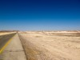 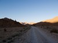  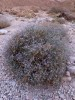 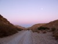 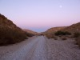
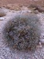 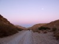 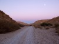
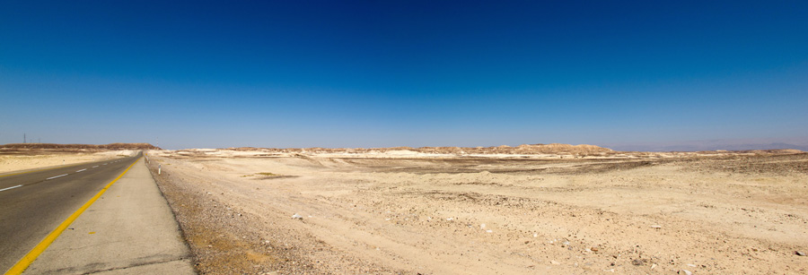
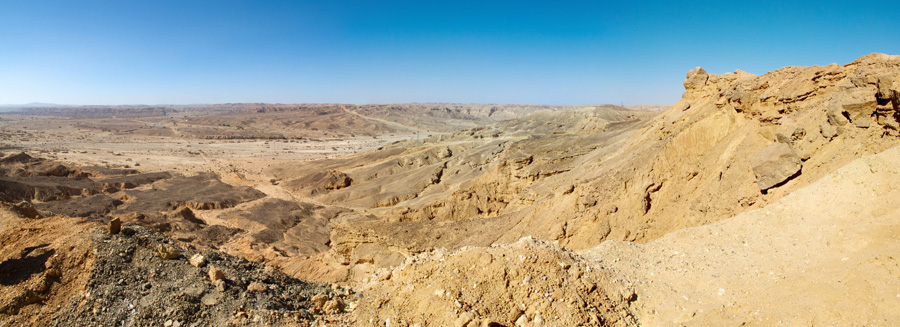
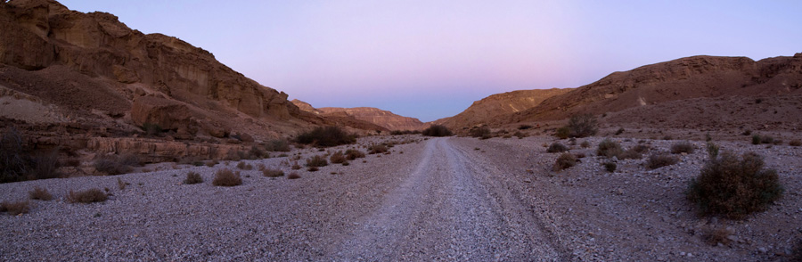